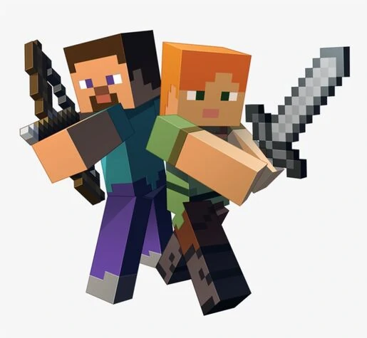

The player is the person that the user controls in the world. When the user starts a game, the player is put in a world, generated by a random or specified seed, with an empty inventory. If the bonus chest option is enabled, a chest filled with basic items generates near the player. The player has a health bar with 10 hearts and can be damaged by falls, suffocation, drowning, fire, lava, lightning, cacti, sweet berry bushes, magma blocks, falling into the Void, hitting another entity with thorns armor, splash potions, falling anvils, freezing in powder snow and being hit by mobs and other players. Damage to health can be mitigated by armor or the Resistance effect, and health can be restored by keeping the hunger bar full enough and drinking specific potions. If the difficulty is set to Peaceful, health regenerates on its own. Hunger is also a factor if the difficulty is not set to Peaceful, depleting over time and even faster while sprinting, jumping or swimming. Food replenishes the hunger level; however, eating rotten flesh and raw chicken has a chance of giving the player a hunger effect. Depending on the difficulty level, starvation depletes a player's health and may even kill the player. A player can change their skin on the profile page of Minecraft.net or in the Minecraft Launcher in Java Edition and in the pause or main menus on Bedrock Edition.
